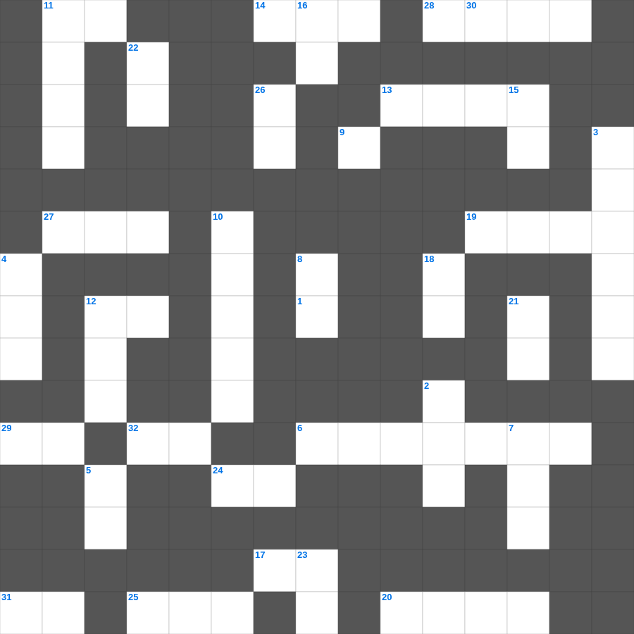

성경 속 유명한 산
📌 서비스 정의
십자가로세로는 교회 주보와 주일학교에서 사용할 수 있는 성경 기반 가로세로 퍼즐 서비스입니다. 성경 인물, 사건, 핵심 구절을 바탕으로 제작되었습니다. 온라인 풀이 및 인쇄 기능을 제공합니다.
오늘은 성경의 주요 내용을 담은 성경 성경 퀴즈 문제를 준비했습니다. 총 35개의 힌트가 있으며, 주일학교 교재나 성경공부 자료로 활용하기 좋습니다. 무료로 즐기는 성경 가로세로 퍼즐을 지금 바로 풀어보세요!

📝 가로 힌트
1. 모세가 반석을 치자 나온 것
6. 사도 바울의 자비량 사역 직업
7. 여섯째 날 마지막에 만드신 존재
9. 너희는 먼저 그의 나라와 그의 이것을 구하라
11. 곡물로 드리는 제사
12. 슬플 때 찢으며 입었던 옷
13. 지붕을 뚫고 내려온 병자
14. 솔로몬 성전의 두 기둥 이름 중 다른 하나
17. 예수님이 첫 기적(물로 포도주)을 베푸신 곳
19. 베드로가 밤새 그물을 던졌으나 잡지 못했을 때 하신 일
20. 우리의 신앙 고백문
24. 반석 위에 지은 집과 이것 위에 지은 집
25. 부지중에 지은 죄를 속하기 위한 제사
27. 언어가 혼잡해져 사람들이 흩어지게 된 탑
28. 예수님이 산 위에서 전하신 복음의 핵심
29. 동방박사들이 별을 보고 찾아와 경배한 날
31. 성령의 9가지 열매 중 두 번째
32. 보라 이전 것은 지나갔으니 보라 이것이 되었도다
📝 세로 힌트
2. 안드레의 형제
3. 광야의 외치는 자의 음식
4. 향을 피워 올리는 곳
5. 이스라엘 열두 지파를 상징하는 보석들
7. 이스라엘이 광야에서 보낸 시간(년)
8. 바다의 물고기와 이것들
10. 산 위에서 예수님의 모습이 광채로 변함
11. 롯의 아내가 뒤를 돌아보다 변한 것
12. 예수님이 무화과나무를 저주하신 곳 근처
15. 영접하는 자 곧 그 이름을 믿는 자들에게는 하나님의 이것이 되는 권세를 주셨으니
16. 이것들을 증언하신 이가 이르시되 내가 진실로 속히 오리라
18. 영들 분별함과 각종 이것 말함
21. 예수 그리스도는 어제나 오늘이나 영원토록 이것하시니라
22. 미리암이 홍해 건넌 후 손에 든 악기
23. 발람 선지자를 책망하며 말을 한 동물
26. 너희의 온 영과 혼과 몸이 우리 주 예수 그리스도 강림하실 때에 흠 없게 이것되기를 원하노라
30. 하나님께 나아가는 자는 반드시 그가 계신 것과 또한 그가 자기를 찾는 자들에게 이것 주시는 이심을 믿어야 할지니라
📖 함께 읽으면 좋은 성경사전
퍼즐을 풀기 전에 읽으면 힌트가 쉬워지고, 풀고 나서 읽으면 내용을 한 번 더 복습할 수 있습니다.
🧩 이 퍼즐에서 배우는 내용
이 퍼즐은 성경 속 유명한 산의 핵심 단어와 개념을 자연스럽게 복습할 수 있도록 구성되었습니다. 주일학교 수업이나 개인 성경공부에서 학습 내용을 점검하는 용도로 바로 활용할 수 있습니다.
🧑🏫 교회 교육 자료 활용
이 퍼즐은 주일학교 교재 추천 자료로 활용할 수 있고, 주일학교 주보에 넣기 좋은 분량으로 구성되어 있습니다. 수업용 주일학교 교안에 활동지로 붙이거나, 예배 후 복습용 주일학교 공과교재로 바로 사용할 수 있습니다.
🏷️ 키워드
성경 성경 퀴즈 문제, 성경, 십자가로세로, 성경퀴즈, 말씀퀴즈, 가로세로퍼즐, 주일학교 교재 추천, 주일학교 주보, 주일학교 교안, 주일학교 공과교재